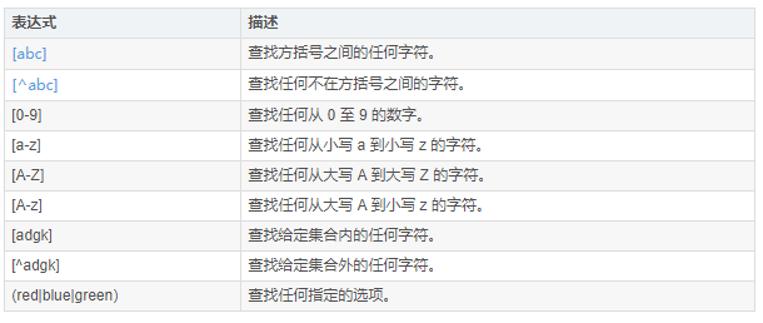

一个六边形我们可以看成是由两个相等的三角形和
密码强度提示效果很明显需要用到css样式以及js进行进一部的设置。我们今天要实现的效果大概如图2.1所示。
整个页面中的重点就是右侧的用户登录部分。但是这个部分其实也不是太难，表单框架用form表单就可以完成，其他的内容也就不一一介绍了。这里唯一需要详细介绍的应该就是今天的密码强度提示效果了。密码强度提示主要是通过匹配数字，字母以及匹配除数字字母外的特殊符号来实现的。这里我们就需要用到css来进行匹配，相关的代码如下：
<script type="text/javascript">
function CheckIntensity(pwd) {
var Mcolor, Wcolor, Scolor, Color_Html;
var m = 0;
//匹配数字
if (/\d+/.test(pwd)) {
debugger;
m++;
};
//匹配字母
if (/[A-Za-z]+/.test(pwd)) {
m++;
};
//匹配除数字字母外的特殊符号
if (/[^0-9a-zA-Z]+/.test(pwd)) {
m++;
};
if (pwd.length <= 6) { m = 1; }
if (pwd.length <= 0) { m = 0; }
switch (m) {
case 1:
Wcolor = "pwd pwd_Weak_c";
Mcolor = "pwd pwd_c";
Scolor = "pwd pwd_c pwd_c_r";
Color_Html = "弱";
break;
case 2:
Wcolor = "pwd pwd_Medium_c";
Mcolor = "pwd pwd_Medium_c";
Scolor = "pwd pwd_c pwd_c_r";
Color_Html = "中";
break;
case 3:
Wcolor = "pwd pwd_Strong_c";
Mcolor = "pwd pwd_Strong_c";
Scolor = "pwd pwd_Strong_c pwd_Strong_c_r";
Color_Html = "强";
break;
default:
Wcolor = "pwd pwd_c";
Mcolor = "pwd pwd_c pwd_f";
Scolor = "pwd pwd_c pwd_c_r";
Color_Html = "无";
break;
}
document.getElementById('pwd_Weak').className = Wcolor;
document.getElementById('pwd_Medium').className = Mcolor;
document.getElementById('pwd_Strong').className = Scolor;
document.getElementById('pwd_Medium').innerHTML = Color_Html;
}
</script>
对于上述代码，其中debugger 语句用于停止执行 JavaScript，并调用 (如果可用) 调试函数。使用 debugger 语句类似于在代码中设置断点。
上面的代码是这样执行的，首先遍历并找到匹配的 case，如果没有匹配（我们这个例子就是没有匹配的）则执行 default，但此时 default 中不存在 break，所以程序又沿着代码继续往下走了。
此外，在匹配过程中我们还用到了正则表达式——/[^0-9a-zA-Z]+/。js正则是在双正斜杠之中起作用的。其中方括号表示范围，^有非的意思。如：[1233]查找方括号之间的任何字符,而[^1233]则表示查找任何不在方括号之间的字符。相关具体内容参考下图：

在实现这个含有显示密码强度的页面过程中，调试各各部分的位置花了很多时间。特别是密码强度显示条的位置最开始一直在尝试使用外链css样式进行调试，但是一直都没
对于蜂窝状图形的打印，其中代码有一句是：transform: rotate(-60deg) skew(30deg)。其中Deg是表示倾斜角度的单位。Rotate表示旋转，skew倾斜。<